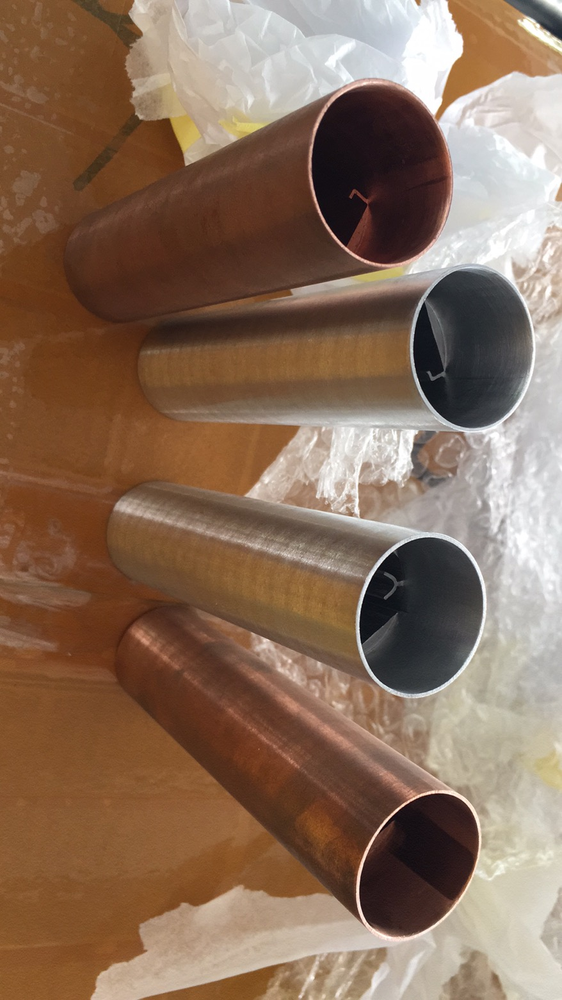
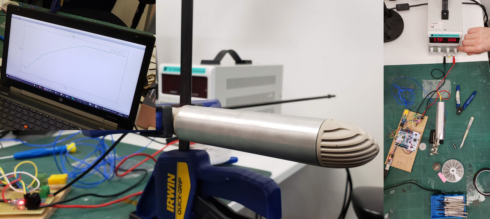

Company: MD London / Makers Department
Description: Part of a multidisciplinary team tasked with developing a hair curling iron, focusing on the design and testing of heating barrels.
My Role: I designed heating barrels in various geometries and materials, ultimately selecting the best option for mass production. Due to the high cost of extrusion prototyping, I identified EDM as a viable alternative for creating prototypes compatible with the production process. Additionally, I designed connectors and a test rig to assess the reliability of these connectors over repeated use.
Outcome: Gained deep insights into material properties and production methods, contributing to the successful development of the hair curler's heating element.
Various barrel geometries explored and the test rig designed to evaluate connector reliability over repeated cycling.


The connector test rig, designed to simulate repeated insertion and removal cycles to validate connector longevity under production conditions.

Company: Freelance
Description: Tasked with prototyping a control board for AC heating elements in a hair curling iron.
My Role: Programmed an Arduino to implement a closed-loop on/off heat control system with hysteresis, using SSR drivers. I incorporated a potentiometer for temperature control and a TFT LCD display for user feedback. Additionally, I enabled temperature data logging via serial communication for troubleshooting and future enhancements. In a related project, I applied these skills to PTC heating elements, demonstrating versatility across different heating technologies.
Outcome: Successfully created a functional prototype that was used for the first investment run, showcasing adaptability in working with various heating elements.